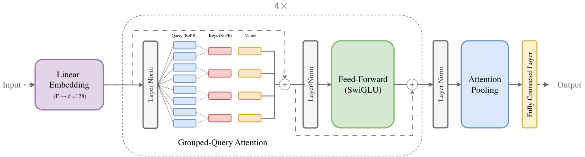

SpeedTransformer: Detecting Transportation Mode Using Dense Smartphone GPS Trajectories
* Equal contribution | † Corresponding author
1 University of California | 2 McGill University | 3 Mila - Quebec AI Institute | 4 University of Pennsylvania | 5 Duke Kunshan University |

Overview of the SpeedTransformer architecture.
Abstract
Transportation mode detection is an important topic within GeoAI and transportation research. In this study, we introduce SPEEDTRANSFORMER, a novel Transformer-based model that relies solely on speed inputs to infer transportation modes from dense smartphone GPS trajectories. In benchmark experiments, SPEEDTRANSFORMER outperformed traditional deep learning models, such as the Long Short-Term Memory (LSTM) network. Moreover, the model demonstrated strong flexibility in transfer learning, achieving high accuracy across geographical regions after fine-tuning with small datasets. Finally, we deployed the model in a real-world experiment, where it consistently outperformed baseline models under complex built environments and high data uncertainty. These findings suggest that Transformer architectures, when combined with dense GPS trajectories, hold substantial potential for advancing transportation mode detection and broader mobility-related research.
Keywords: GeoAI; Transformers; Dense GPS Trajectories; Deep Learning; Field Experiments; Emissions.
BibTeX
@article{zhang2026speedtransformer,
title = {Detecting Transportation Mode Using Dense Smartphone GPS Trajectories and Transformer Models},
author = {Zhang, Yuandong and Echchabi, Othmane and Feng, Tianshu and Zhang, Wenyi and Liao, Hsuai-Kai and Chang, Charles},
journal = {International Journal of Geographical Information Science (IJGIS)},
year = {2026}
}
Acknowledgements
We thank the Institute for Transport Planning and Systems at ETH Zürich for providing the data used in our model training. We are also grateful to Yucen Xiao, Peilin He, Zhixuan Lu, Yili Wen, Shanheng Gu, Ziyue Zhong, and Ni Zheng for their excellent research assistance. This project was supported by the 2024 Kunshan Municipal Key R&D Program under the Science and Technology Special Project (No. KS2477).